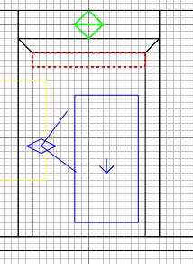
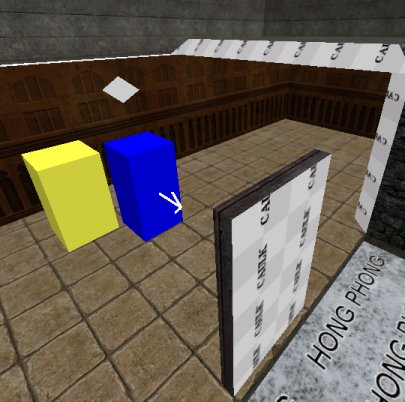
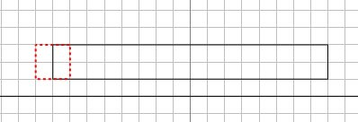
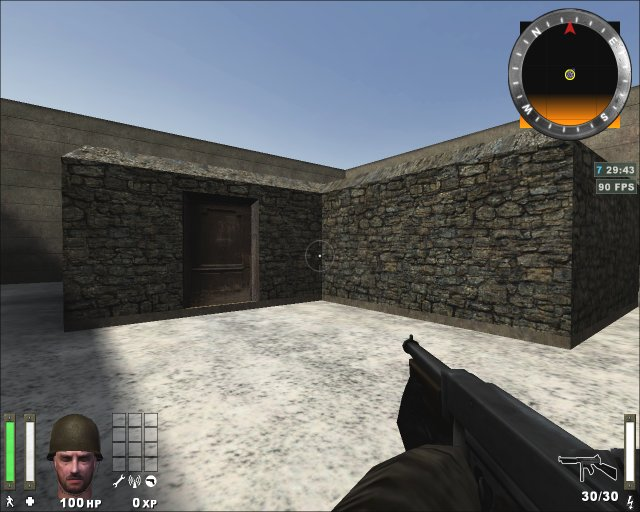

|
Get the overhead view. Press 3.
Create a brush as shown, and caulk it.
Ctrl+tab, and drag the brush into the
door opening.

Resize it to fill the doorway.
Press ESC. Hide the door frames and
walls that surround the door frames, so we
can see our door properly.
Select the 3 door edge faces, and apply
the wood_c01 texture. Press ESC.
Reselect the top face, press S, and rotate
the texture through 90 degrees. Press
ESC.

Select both of the main door faces, and
click Textures/doors and click the door_c01b
texture. The door will look a muddle;
don't worry. There are lots of door
textures, but most of them are scattered
about, rather than in the doors folder :(
Press S. Click
"Fit". Click Done.
Press ESC.
We have our door (non-functioning at the
mo). Note that the door texture is
mirrored on the reverse face, which is handy
as it will keep the handle/hinges in the
right place. Textures are always
reversed on opposite edges.
Now to make the door work.
Get the overhead view, and draw a brush
as shown (yes it overlaps). It will
define the hinged side.

Get a side view. Adjust the brush
to be the same height as the door.
Click Textures/common and click the Origin
texture (orange check pattern).
Now select the door, so that it and the
origin brush are both selected.
In the 2D window, right click and select
"func" then
"func_door_rotating".
Press N. Enter "type" as
a key and "4" as a value and
press return. Close the entities
window.
We have an operational door, but there is
one more thing we need to do, otherwise the
compile will fail.
Press ESC and shift+H to reveal all the
hidden brushes.
Select the 3 door frame brushes, then in
the 2D window right click and select
"Make Detail". This is
because entities, such as an origin brush,
cannot fall within a structural brush (such
as all the walls made so far) but it's ok to
fall within a detail brush (to be explained
later).
You're all done. Save the work,
compile and test. Don't worry, it
isn't always this long-winded. Once
you've made something like a door, you make
it into a prefab (explained later) and then
you can just plonk copies of it into place
as and when you want.

|